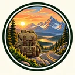

Journeys
Films arranged as a journey, one road at a time, from the places named in the videos.
East to west, 27 filmed stops
Halkidiki, and a 2008 trip to Skopelos, Mount Olympus, Pella, Meteora, and Thessaloniki